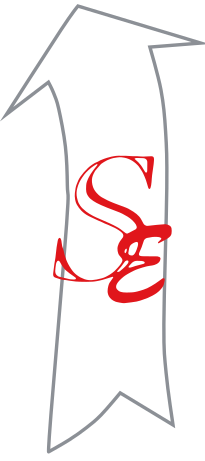

Usage guide for the vector logo rebuilt in September 2026 from the only supplied artwork, two small raster files. The mark and wordmark keep the original design; this package makes them sharp at any size and gives every surface the right version.

| Version | Use it for |
|---|---|
Primary (01-primary) | Default: website header, letterhead, documents, signage on light backgrounds. |
| Primary short | Tight horizontal spaces where "Pvt. Ltd." would be too small to read. Use the full name in legal and financial documents. |
Reverse (02-reverse) | Navy or dark photography: website footer, dark slides, vehicle livery. |
Mono black / white / blue (03-mono) | One-colour print, stamps, engraving, foil, embroidery, fax. |
Stacked (04-stacked) | Square and narrow spaces: social profile images, merchandise, booth panels. |
Symbol (05-symbol) | Where the name is already present or space is very small; app icons and avatars. |
Favicon (06-favicon) | Browser tabs and home-screen icons. The favicon uses heavier strokes so it still reads at 16 px. |
Keep a margin of X on every side, where X is the height of the capital S in the wordmark. Nothing else (text, photos edges or other logos) should enter it.
| Version | Screen | |
|---|---|---|
| Primary | 160 px wide | 40 mm wide |
| Primary short | 120 px wide | 30 mm wide |
| Stacked | 90 px wide | 22 mm wide |
| Symbol | 24 px tall (below this, use the favicon files) | 10 mm tall |
| Embroidery | Use the mono symbol or mono stacked version at 25 mm or larger; the SE hairlines need at least 1 mm thread width. | |
| Role | HEX | RGB | CMYK (approximate) | |
|---|---|---|---|---|
| SE monogram red | #E0161B | 224 22 27 | 0 90 88 12 | |
| Arrow grey | #8C9096 | 140 144 150 | 7 4 0 41 | |
| Wordmark charcoal | #363636 | 54 54 54 | 0 0 0 79 | |
| Silicom blue (mono version, website) | #0B6FD3 | 11 111 211 | 95 47 0 17 | |
| Navy background (reverse) | #061A33 | 6 26 51 | 88 49 0 80 | |
| Arrow on navy | #B9C6D6 | 185 198 214 | 14 7 0 16 | |
| SE on navy | #FF4A4F | 255 74 79 | 0 71 69 0 |
CMYK values are straight conversions. Ask your printer for a proof; for spot colour, match the red and grey against a physical Pantone swatch book.
✕ Stretch, squash or rotate the logo.
✕ Recolour it outside the versions in this package.
✕ Replace the wordmark with another typeface.
✕ Rearrange the arrow, monogram and name.
✕ Add shadows, glows, bevels or gradients.
✕ Put the colour version on dark or busy backgrounds; use the reverse.
✕ Use the old PNG logo files for print; they are low resolution.
✕ Draw the arrow filled in; it is always an outline.
SVG is the master for every version. Use PDF for print, PNG (transparent, 256–2048 px wide) for slides and documents, and JPG (white background) for email signatures. The files are generated by prototype/scripts/build-logo.py; edit that script rather than the files. The Alegreya font licence is in prototype/scripts/fonts/Alegreya-OFL.txt.